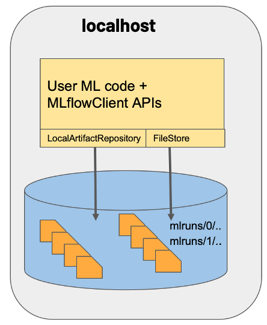
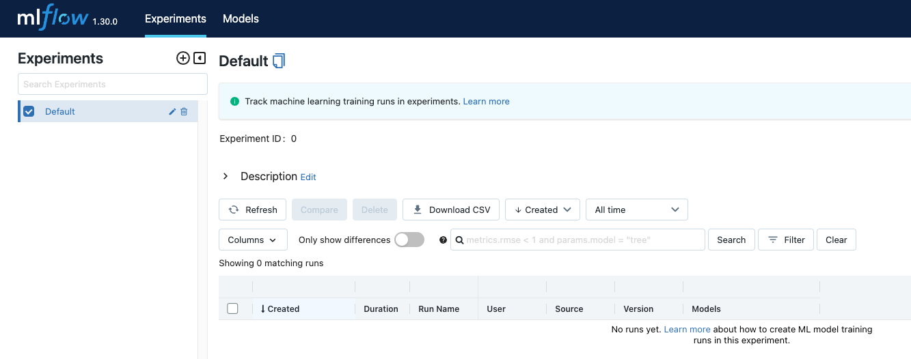

MLflow Set Up
In this section, we will install MLflow and try out different configuration scenarios.
Install
The easiest way to install MLflow is using pip as follows -
Make sure you have created and activated the virtual environment using the python virtual environment manager of your choice.
!pip install --upgrade pip
!pip install --quiet mlflowMLflow comes with a rich CLI that provides a simple interface to various functionality in MLflow. You can use the CLI to run projects, start the tracking UI, create and list experiments, download run artifacts, serve MLflow Python Function and scikit-learn models, and serve models on Microsoft Azure Machine Learning and Amazon SageMaker.
!mlflow --helpIn the next section, we will use mlflow server <args> and mlflow ui commands to demonstrate different MLflow set up scenarios.
Common MLflow configurations
Since the MLflow client can interface with a variety of backend and artifact storage configurations. We will look a three common scenarios:
Scenario#1
MLflow on localhost
This is the most basic set up, where both backend and artifact store are set to local file store. It’s the default mode, so we don’t have to set any parameters while starting the tracking server.
Start MLflow tracking server without any arguments as follows:
mlflow server
Scenario#2
MLflow on localhost with backend store as an SQLAlchemy compatible database type: SQLite
In this case, artifacts are stored under a local directory, and MLflow entities are inserted in a SQLite database file mlruns.db.
Start MLflow tracking server by specifying appropriate values for --backend-store-uri and --default-artifact-root as follows:
mlflow server --backend-store-uri sqlite:////workspace/mlruns.db \
--default-artifact-root /workspace/mlruns
Scenario#3
Tracking server launched at localhost
Similar to scenario 1 but a tracking server is launched, listening for REST request calls at the default port 5000.
Start MLflow tracking server by specifying local file path value for --backend-store-uri as follows:
mlflow server --backend-store-uri /workspace/mlruns
MLflow Tracking UI
After the tracking server is up using the scenario of choice, you can launch MLflow tracking UI by typing mlflow ui --port 6000 in a separate terminal.
At this point you should have two MLflow services running locally:
- MLflow Tracking server running at
http://localhost:5000 - MLflow Tracking UI at
http://localhost:6000
MLFlow Tracking UI is in constant communication with the tracking server to present the results of each experiment from the set storage location. It also, allows to compare results across runs and experiments.
